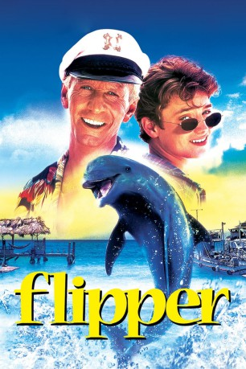
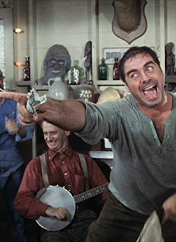

#10985 Flipper
 
 IMDB-Wertung: 5.3 / 10
IMDB-Wertung: 5.3 / 10  Tomatometer: 32
Tomatometer: 32  Metascore: 43
Metascore: 43 
Sandy hat null Bock, den Sommer bei seinem Althippie-Onkel in der Nähe von Key West zu verbringen. Erst als er ein Delphinjunges rettet und den neuen Freund Flipper nennt, steigt seine Urlaubslaune beträchtlich. Bald wird das Tier durch leckgeschlagene Giftfässer krank. Sandy pflegt Flipper gesund und fahndet gemeinsam mit seinem Onkel nach den Öko-Verbrechern ...
Jahr: 1996
Dauer: 95 Minuten
FSK: 6
Land: USA Studio: Universal PicturesTonspuren: DTS - ,
Untertitel: Deutsch,
Auflösung: 1080p (1920x816) Größe: 5765 MB
Genre: Abenteuer, Familie
Regisseur: Alan Shapiro
Drehbuch: Ricou Browning, Jack Cowden, Arthur Weiss, Alan Shapiro
Soundtrack: Joel McNeely
Darsteller:
 Elijah Wood als Sandy Ricks
Elijah Wood als Sandy Ricks- Paul Hogan als Porter Ricks
 Jonathan Banks als Dirk Moran
Jonathan Banks als Dirk Moran- Robert Deacon als Bounty Fisherman #1
- Luke Halpin als Bounty Fisherman #3
 Chelsea Field als Cathy
Chelsea Field als Cathy- Jason Fuchs als Marvin
- Jessica Wesson als Kim
-  Mal Jones als Russ
 Isaac Hayes als Sheriff Buck Cowan
Isaac Hayes als Sheriff Buck Cowan- Allison Bertolino als Sandy's Sister
- Ann Carey als Fisherman's Wife
- Mark Casella als Bounty Fisherman #2
- Bill Kelley als Tommy
- Lindsay Treco als Little Girl
- Louis Seeger Crume als Mr. Dunnahy
- Bill Nolan als Bartender
- Mary Jo Faraci als Sandy's Mom
- Kourtney Brown als Show Kid (uncredited)
- Danielle Mulholland als Extra (uncredited)
- Bryon Williams als Band Leader (uncredited)
Datei: X:\1996\Flipper (1996, FSK6, 1920x816).mkv seit 16.04.2019
Festplatte: Gemischt-01+Anime
 Es gibt insgesamt 78 Filme in der Gruppe '1996'
Es gibt insgesamt 78 Filme in der Gruppe '1996'